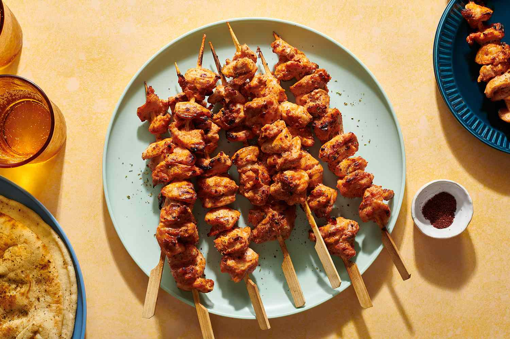
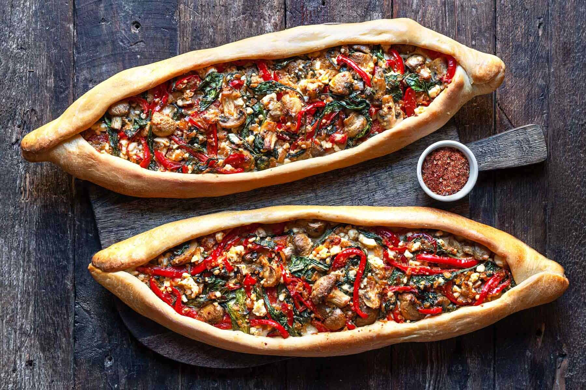

TURKISH CUISINE

Kebab
Turkish kebab is a popular dish that is made with marinated meat that is grilled or roasted on a skewer. The meat can be beef, lamb, or chicken, and it is typically marinated in a mixture of yogurt, spices, and oil for several hours before cooking.
 Manti
Manti
Manti is a traditional Turkish dish that consists of small dumplings that are filled with ground meat, such as lamb or beef, and then boiled or steamed. The dumplings are typically served with a garlic yogurt sauce and a spicy tomato-based sauce.
Lahmacun
Lahmacun is a traditional Turkish dish that is similar to a thin-crust pizza. It is made by spreading a thin layer of ground meat, usually lamb or beef, on a thin, round dough, which is then baked until crispy. The meat mixture is typically seasoned with onions, garlic, tomatoes, peppers, and a variety of spices.
 Baklava
Baklava
Lahmacun is a traditional Turkish dish that is similar to a thin-crust pizza. It is made by spreading a thin layer of ground meat, usually lamb or beef, on a thin, round dough, which is then baked until crispy. The meat mixture is typically seasoned with onions, garlic, tomatoes, peppers, and a variety of spices.

Pide
Pide is a traditional Turkish dish that is similar to a flatbread or pizza. It is made by baking a boat-shaped dough that is topped with a variety of ingredients, such as meat, cheese, vegetables, and herbs.